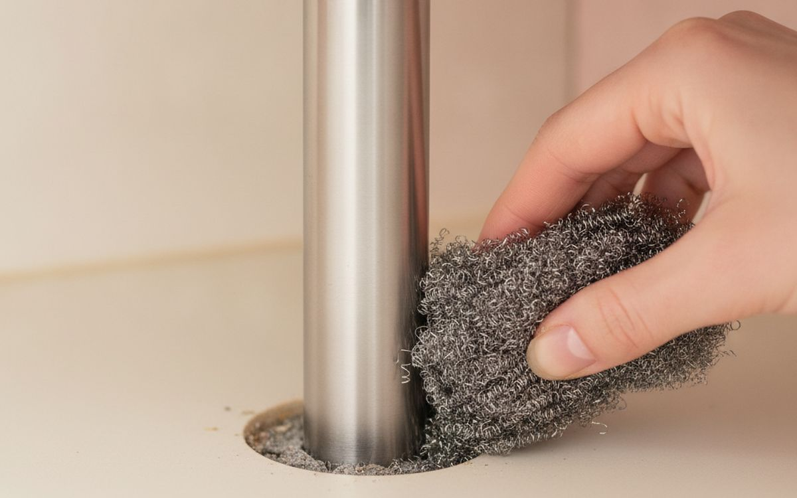
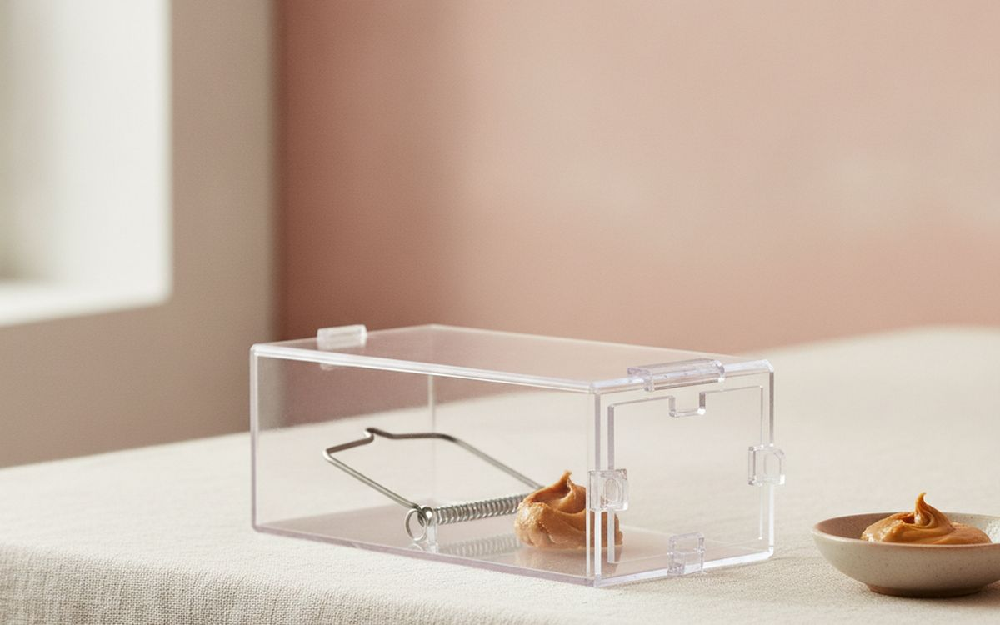
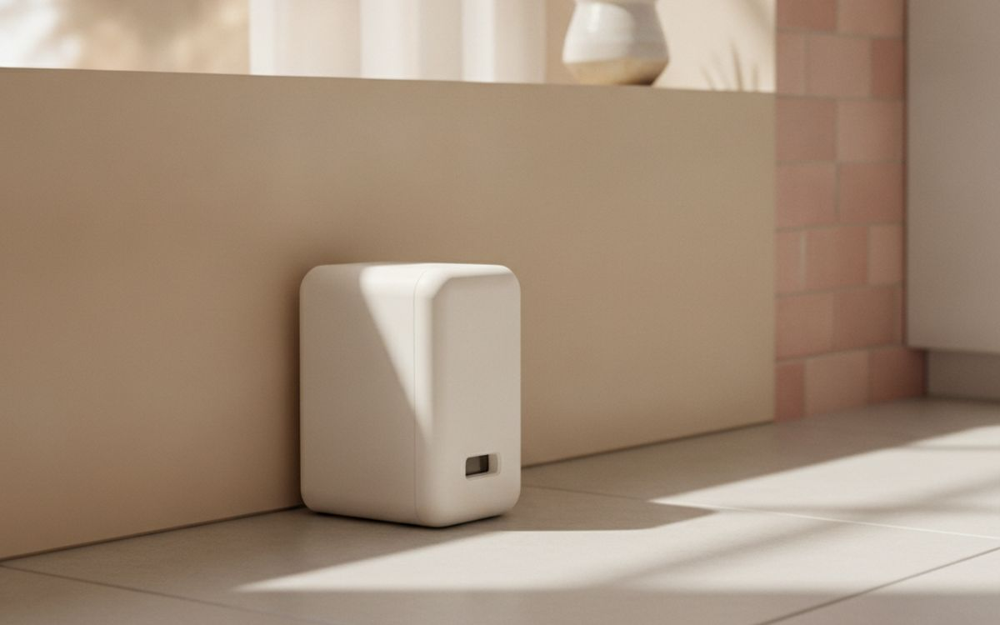
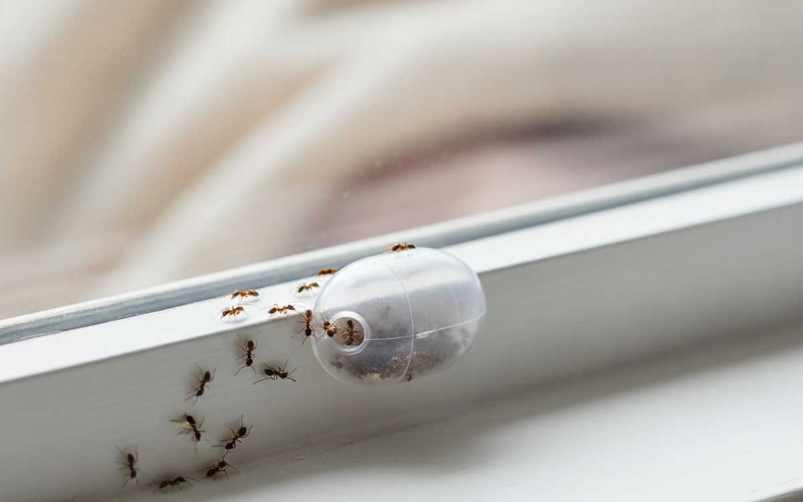
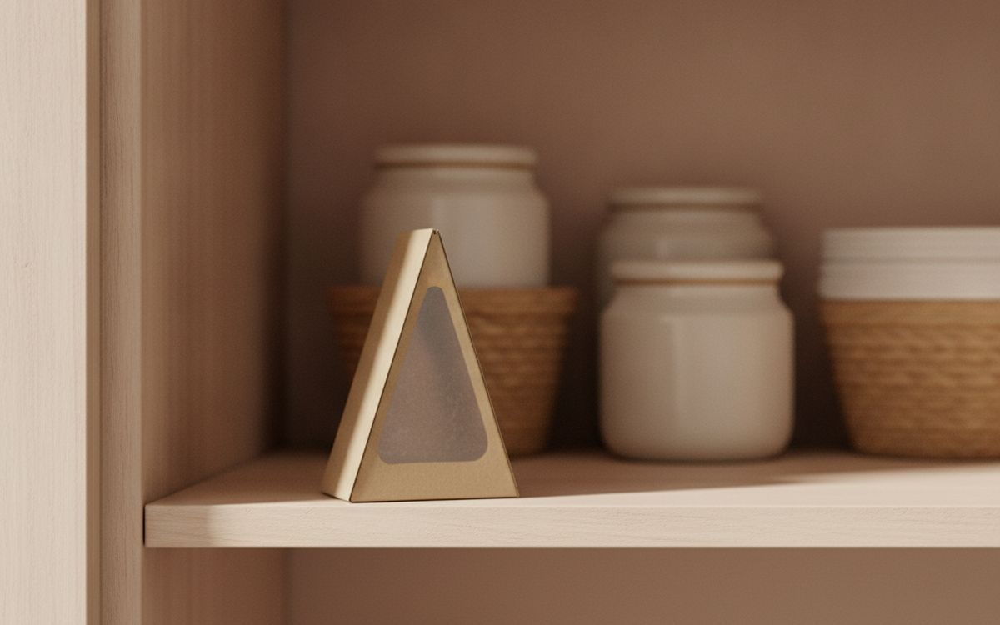
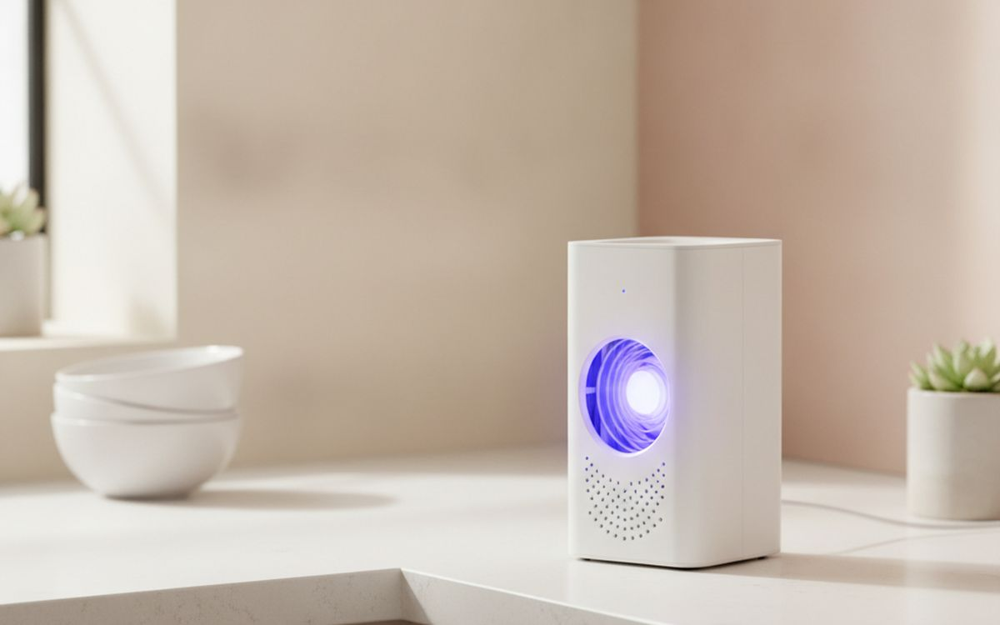
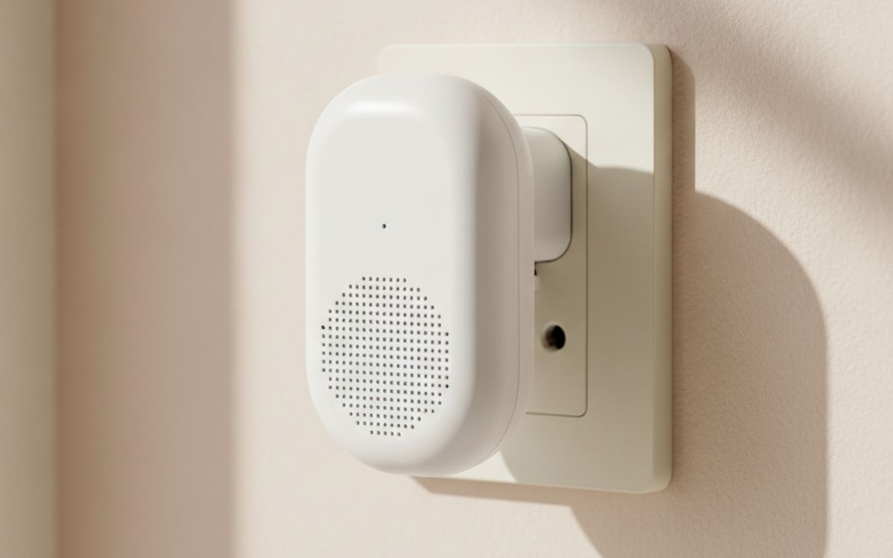

The pest control aisle sells two kinds of product: poisons that work but put children and pets at risk, and plug-in gadgets that promise to repel everything and mostly repel your money. Neither addresses why the pests came in. Mice come for food and warmth through a gap you can fit a pencil through. Ants follow a trail to crumbs. Moths live in the wool you have not worn since spring.
So this list is ordered by what solves the problem for good. Blocking the way in and removing the food come first, because they work on everything. Traps come after, and we say plainly which popular gadgets do not work.
Prices below are approximate street prices at the time of writing and move around constantly, especially during sale events. Treat them as a rough band for budgeting, not a quote. Always check the live listing before you buy.
Με λίγα λόγια
Steel wool and a gap-sealing kit
The fix that stops pests coming back
Γνωστοποίηση. Οι σύνδεσμοι σε αυτή τη σελίδα είναι συνδεδεμένοι. Αν αγοράσετε μέσω κάποιου, ενδέχεται να λάβουμε προμήθεια χωρίς επιπλέον κόστος για εσάς. Δεν επηρεάζει το τι μπαίνει στη λίστα ούτε τη σειρά της.
Πώς επιλέξαμε
These picks come from university extension services, public health guidance, pest-control professionals' advice and long-run owner reports, cross-checked against current retail listings. We have not personally tested every item here. For large infestations, wasps, termites or anything that bites, call a licensed professional rather than relying on this list.
Με μια ματιά
Οι τιμές είναι ενδεικτικές κατά τη συγγραφή και αλλάζουν συχνά.
Οι επιλογές

01 · The fix that stops pests coming backSteel wool and a gap-sealing kit
A mouse can squeeze through a gap the width of a pencil. Look under sinks, behind appliances, around pipes and where cables enter the walls. Stuff small gaps with steel wool or copper mesh, which rodents cannot chew, and seal over it with caulk or expanding foam. Door sweeps close the gap under exterior doors. This takes an afternoon and prevents the next infestation, which no trap can do. The case for it: stops pests at the source, works on mice, insects and draughts, and one-time fix. The trade-off is real: finding every gap takes patience and renters should check with the landlord for larger holes, so weigh that against how often it would actually get used.
$10-25Ο συμβιβασμός: Finding every gap takes patience
Γιατί είναι εδώ
- Stops pests at the source
- Works on mice, insects and draughts
- One-time fix
Αξίζει να ξέρετε
- Finding every gap takes patience
- Renters should check with the landlord for larger holes
02 · Removing the food sourceAirtight food storage containers
Mice, ants and pantry moths are all there for the food. Cardboard boxes and rolled-up bags are easy to get into. Moving cereal, flour, rice, pet food and snacks into airtight containers takes away the reason to visit. Clear ones make it easy to see what you have, and square shapes use shelf space well. The case for it: removes the main attraction, keeps food fresher, and makes pantry moths easy to spot. The trade-off is real: takes up more cupboard space than bags and seals wear out on cheap sets, so weigh that against how often it would actually get used.
$20-45Ο συμβιβασμός: Takes up more cupboard space than bags
Γιατί είναι εδώ
- Removes the main attraction
- Keeps food fresher
- Makes pantry moths easy to spot
Αξίζει να ξέρετε
- Takes up more cupboard space than bags
- Seals wear out on cheap sets

03 · Mice, without killingHumane catch-and-release mouse traps
Tunnel-style traps let a mouse in and close behind it, unharmed. They work well with a dab of peanut butter. The catch is that you must check them daily, because a trapped mouse dies of stress and thirst quickly, and you must release it far enough away, at least a mile or so, or it comes straight back. Release is not legal everywhere, so check local rules. The case for it: no killing, reusable, and safe around pets and children. The trade-off is real: must be checked every day and mice released nearby come back, so weigh that against how often it would actually get used.
$12-25Ο συμβιβασμός: Must be checked every day
Γιατί είναι εδώ
- No killing
- Reusable
- Safe around pets and children
Αξίζει να ξέρετε
- Must be checked every day
- Mice released nearby come back

04 · Fast, certain mouse controlEnclosed snap traps
If humane release is not practical, modern enclosed snap traps are quick and far safer than poison. Poisoned mice die inside walls, where they smell for weeks, and poison can harm pets and wildlife that eat them. Enclosed traps keep fingers and paws out. Place them along walls, where mice run, not in the middle of the floor. The case for it: fast and effective, enclosed design protects pets and kids, and no poisoned animals in walls. The trade-off is real: not for people who do not want to kill mice and several traps work better than one, so weigh that against how often it would actually get used.
$10-20Ο συμβιβασμός: Not for people who do not want to kill mice
Γιατί είναι εδώ
- Fast and effective
- Enclosed design protects pets and kids
- No poisoned animals in walls
Αξίζει να ξέρετε
- Not for people who do not want to kill mice
- Several traps work better than one

05 · Ant trailsAnt bait stations (borax-based)
Spraying the ants you can see does nothing about the nest. Bait stations work because worker ants carry the bait home and share it with the colony. Place them on the trail and resist the urge to wipe the ants away; the traffic means it is working. It can take a week or two. Keep baits away from pets and children even though the enclosed stations make this easier. The case for it: reaches the whole colony, cheap, and enclosed stations limit exposure. The trade-off is real: takes one to two weeks and wiping the trail too early stops it working, so weigh that against how often it would actually get used.
$6-12Ο συμβιβασμός: Takes one to two weeks
Γιατί είναι εδώ
- Reaches the whole colony
- Cheap
- Enclosed stations limit exposure
Αξίζει να ξέρετε
- Takes one to two weeks
- Wiping the trail too early stops it working
06 · Flies and mosquitoesWindow and door screens
A screen stops flies and mosquitoes coming in at all, which beats any trap. If your windows lack screens, adjustable or magnetic-strip mesh screens fit most openings without tools. Magnetic door curtains close themselves behind you, which is useful for back doors in summer. Check existing screens for tears and patch them. The case for it: keeps insects out entirely, lets you open windows freely, and no chemicals. The trade-off is real: adhesive strips can peel off painted frames and cheap mesh tears easily, so weigh that against how often it would actually get used.
$15-40Ο συμβιβασμός: Adhesive strips can peel off painted frames
Γιατί είναι εδώ
- Keeps insects out entirely
- Lets you open windows freely
- No chemicals
Αξίζει να ξέρετε
- Adhesive strips can peel off painted frames
- Cheap mesh tears easily
07 · Clothes mothsCedar blocks and sealed storage bags
Clothes moths lay eggs in wool, cashmere and silk, especially items stored dirty. Wash or dry-clean before storing, then seal off-season clothes in zip bags or vacuum bags. Cedar blocks help repel moths, but lose their effect after a season; sand them lightly to refresh. Moth pheromone traps in the wardrobe tell you if you have a problem. The case for it: protects expensive knitwear, chemical-free, and sealed bags also save space. The trade-off is real: cedar alone will not stop an infestation and clothes must be clean before storing, so weigh that against how often it would actually get used.
$15-30Ο συμβιβασμός: Cedar alone will not stop an infestation
Γιατί είναι εδώ
- Protects expensive knitwear
- Chemical-free
- Sealed bags also save space
Αξίζει να ξέρετε
- Cedar alone will not stop an infestation
- Clothes must be clean before storing

08 · Moths in the cupboardPantry moth pheromone traps
Pantry moths arrive in flour, rice or nuts and spread to everything. Pheromone traps catch the males and show you how bad things are. The real fix is emptying the cupboard, binning infested food, wiping the shelves and using airtight containers. The traps then warn you early if they return. The case for it: early warning of a problem, non-toxic, and cheap. The trade-off is real: traps alone do not end an infestation and only catches males, so weigh that against how often it would actually get used. For $8-15, it is a small, low-risk addition to the list rather than a centrepiece purchase you need to think hard about.
$8-15Ο συμβιβασμός: Traps alone do not end an infestation
Γιατί είναι εδώ
- Early warning of a problem
- Non-toxic
- Cheap
Αξίζει να ξέρετε
- Traps alone do not end an infestation
- Only catches males

09 · Flies indoorsA UV or light-based fly trap
For flies that still get in, a light trap with a sticky board draws them in quietly and works overnight. Sticky-board models are quieter and less messy than zapping ones. Place it away from windows so it does not attract insects from outside. Fruit flies are better handled with a small dish of cider vinegar and a drop of dish soap. The case for it: quiet overnight control, no sprays, and works in kitchens. The trade-off is real: sticky boards need replacing and less effective in bright daylight rooms, so weigh that against how often it would actually get used.
$20-45Ο συμβιβασμός: Sticky boards need replacing
Γιατί είναι εδώ
- Quiet overnight control
- No sprays
- Works in kitchens
Αξίζει να ξέρετε
- Sticky boards need replacing
- Less effective in bright daylight rooms

10 · Mostly skipUltrasonic plug-in repellers
These are sold everywhere with big claims. Independent studies and extension services have found little evidence they get rid of mice or insects for long, and the US Federal Trade Commission has warned sellers over unsupported claims. Rodents seem to get used to the sound. We include them because they are so heavily marketed; spend the money on sealing gaps instead. The case for it: heavily sold, so worth knowing about, harmless to people, and might deter pests briefly. The trade-off is real: little evidence that they work and some pets can hear and dislike them, so weigh that against how often it would actually get used.
$15-30Ο συμβιβασμός: Little evidence that they work
Γιατί είναι εδώ
- Heavily sold, so worth knowing about
- Harmless to people
- Might deter pests briefly
Αξίζει να ξέρετε
- Little evidence that they work
- Some pets can hear and dislike them
Συχνές ερωτήσεις
What is the best way to get rid of mice?
Seal the gaps they use, store food in airtight containers, then trap along walls. Poison is best avoided indoors.
Do ultrasonic repellers work?
The evidence is weak. They are not a substitute for sealing gaps and removing food.
How do I get rid of ants without spraying?
Use bait stations on the trail and let the ants carry the bait back to the nest. Clean crumbs and seal food.
When should I call a professional?
For large infestations, wasp nests, termites, bed bugs, or rats you cannot trace.
Οι προσφορές σήμερα
Δείτε τι είναι σε έκπτωση αυτή τη στιγμή.
Προσφορές →← Όλοι οι οδηγοί
Ως συνεργάτες της AliExpress, κερδίζουμε από επιλέξιμες αγορές. Οι τιμές και η διαθεσιμότητα ισχύουν κατά την ημερομηνία δημοσίευσης και ενδέχεται να αλλάξουν.